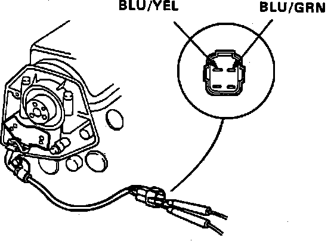
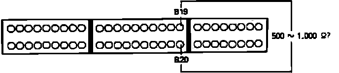

DTC 4
Code 4 indicates a malfunction in the CRANK portion of CRANK/CYL sensor.1. Remove Alternator Sense fuse in underhood relay box for 10 seconds to reset ECU.
2. Start engine and observe diagnostic LED.
Flashes code 4, proceed to step 4.
Does not flash, proceed to next step.
3. Malfunction is intermittent, check for loose connection between CRANK/CYL sensor and ECU. End of test.
CRANK Sensor Code 4 Diagnosis:

4. Stop engine and disconnect CRANK/CYL sensor connector.
5. Measure resistance between BLU/YEL and BLU/GRN terminals.
500 - 1000 ohms, proceed to next step.
Not 500 - 1000 ohms, replace CRANK/CYL sensor. End of test.
6. Check for continuity to ground for BLU/YEL and BLU/GRN wires individually.
Continuity, replace CRANK/CYL sensor. End of test.
No continuity, proceed to next step.
7. Reconnect sensor connector.
CRANK Sensor Code 4 Diagnosis:

8. Install test harness to main harness only. If test harness is not available, carefully backprobe wires at ECU connector.
9. Measure resistance between ECU terminals B19 and B20.
500 - 1000 ohms, proceed to step 11.
Not 500 - 1000 ohms, proceed to next step.
10. Repair open in BLU/YEL or BLU/GRN wire between ECU and CRANK/CYL sensor. End of test.
11. Check for continuity to ground at ECU terminal B19.
Continuity, proceed to next step.
No continuity, proceed to step 13.
12. Repair short to ground in BLU/GRN wire between ECU terminal B19 and CRANK/CYL sensor.
13. Replace electronic control unit.